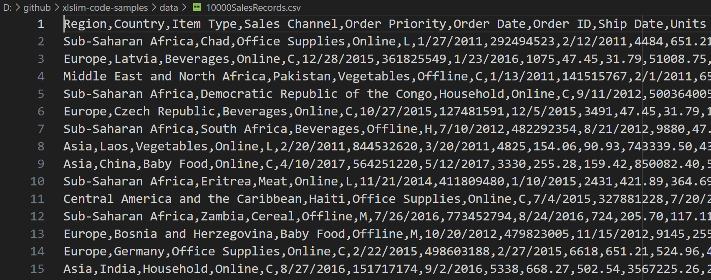
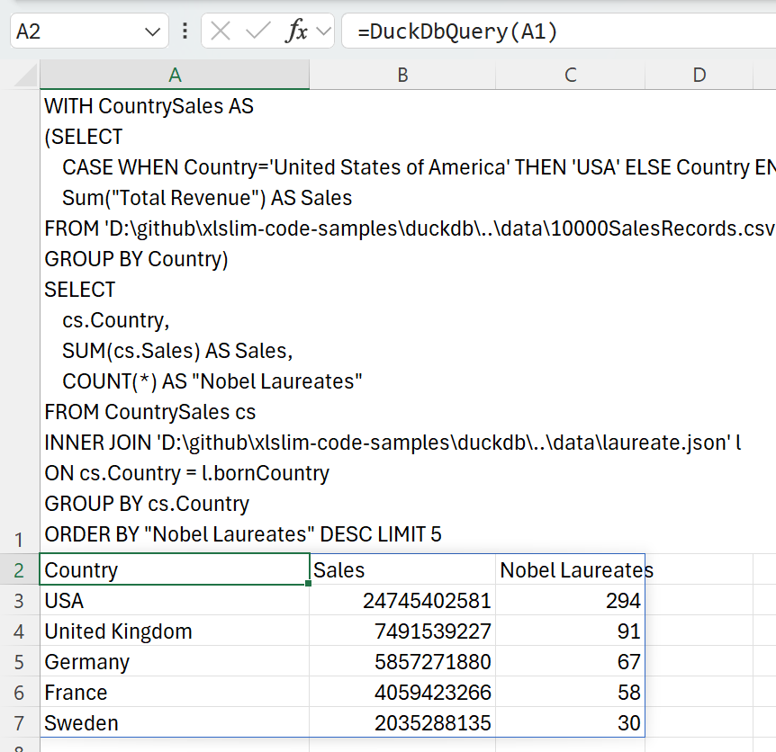
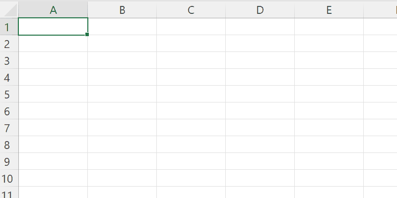
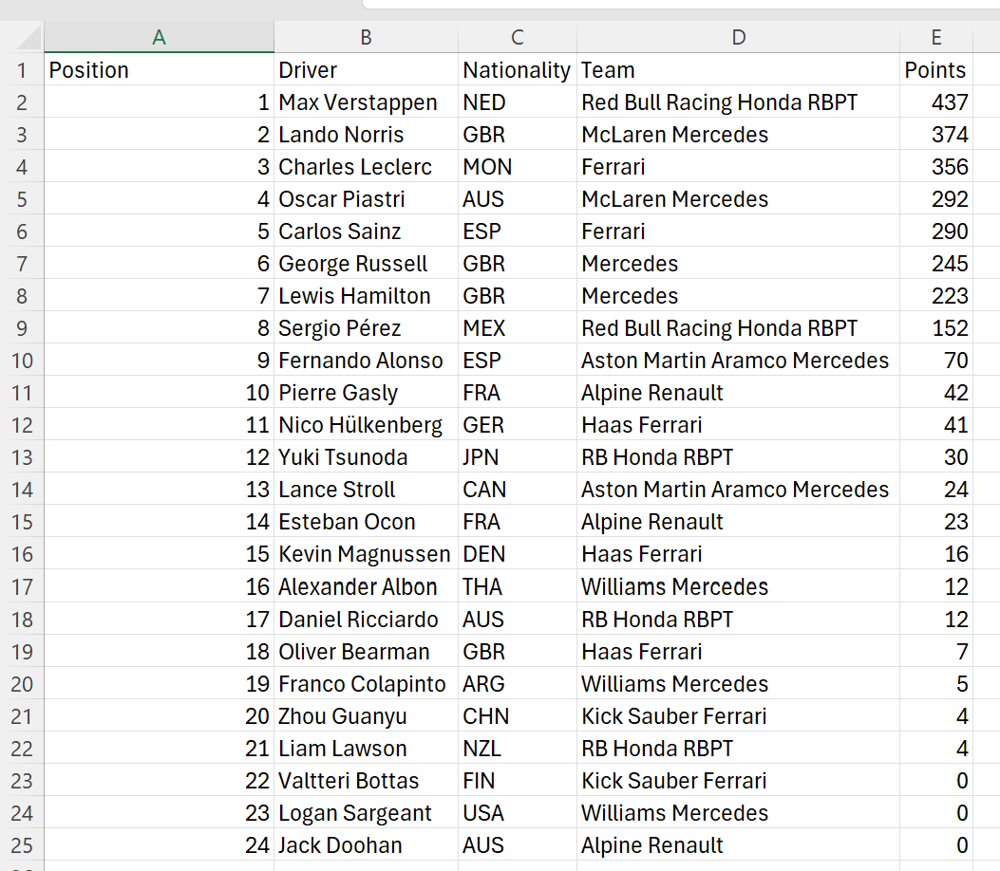
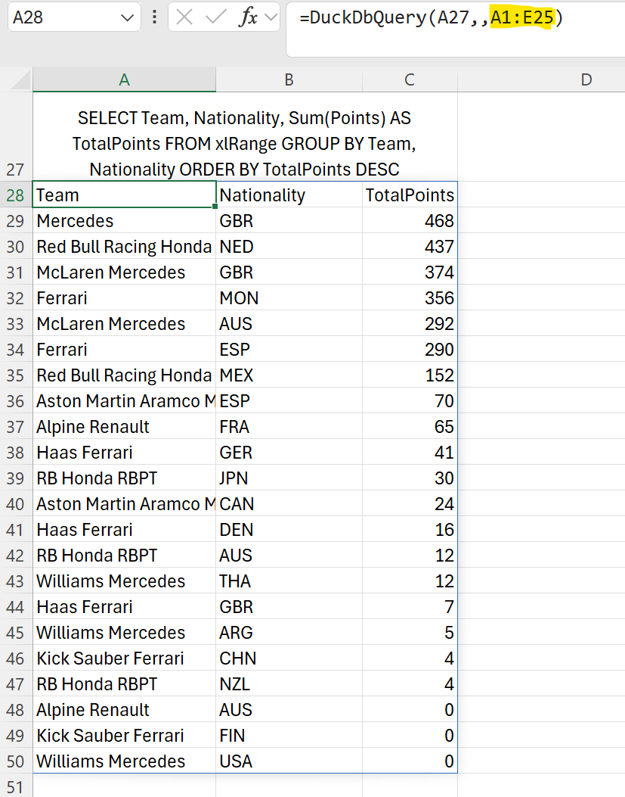
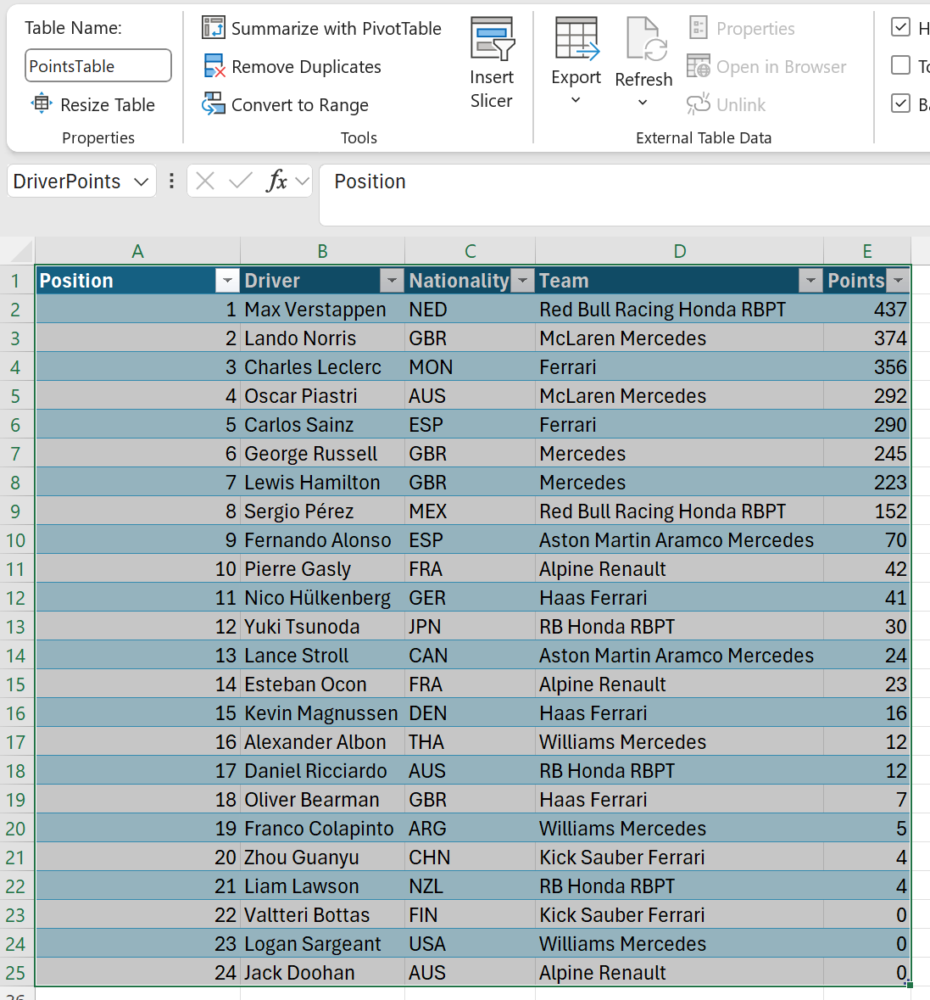
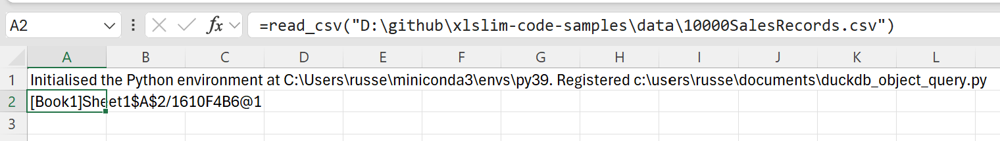

DuckDB
DuckDB is a powerful analytical database that allows you to easily import and analyse large datasets. DuckDB fully supports SQL with many improvements to make SQL friendlier.
xlSlim includes a complete in-process DuckDB which allows DuckDB SQL statements to be run within either an in-memory or on-disk database. DuckDB can read data from many common file formats, see the sections below for Querying JSON files, Querying Parquet files and Querying CSV files. Additionally, DuckDB has functionality for Querying from remote locations.
DuckDB functionality is accessed within Excel by calling xlSlim’s DuckDbQuery() function.
Tip
When copying text such as SQL commands into Excel cells, add a ‘ at the start so that Excel treats the input as a string.
{kind=link}
Warning
DuckDB requires a premium licence. See Licensing
Querying JSON files
Reading data from JSON files can be difficult, particularly if the data is nested.
This JSON file contains details of Nobel prize laureates:

The data is presented as a list of dictionaries with the prizes field being a further list of dictionaries.
DuckDB allows the laureates names and birth countries to be extracted with a simple SQL SELECT. Notice how DuckDB allows the JSON file to be treated just like a regular database table:
SELECT firstname, surname, bornCountry FROM 'laureate.json' LIMIT 5
Passing the SQL into the DuckDbQuery() function gives the following result:

We can now easily find the countries with the most Nobel prize winners:
SELECT bornCountry AS Country, COUNT(*) AS Number FROM 'laureate.json' GROUP BY bornCountry ORDER BY COUNT(*) DESC LIMIT 5

DuckDB supports the use of JSONPath to extract values from nested JSON fields. This allows us to extract the category and motivation of the first prize awarded to each person.
SELECT firstname, surname, prizes->>'$[0].category' AS Category, prizes->>'$[0].motivation'AS Motivation FROM 'laureate.json' LIMIT 5
{kind=link}
Full details of DuckDB’s JSON capabilities are available in their documentation.
Querying CSV files
Data is often stored in CSV files. Surprisingly, CSV is not a standardised data format and many variations exist. DuckDB is able to handle most CSV files automatically, detecting the column delimiters, data types, and so on.
This CSV file contains 10,000 sales records:
{kind=link}
DuckDB allows the region, item type and total revenue for each sale to be extracted with a simple SQL SELECT. Notice how, just like the JSON example above, DuckDB allows the CSV file to be treated as a regular database table:
SELECT Region, "Item Type", "Total Revenue" FROM '10000SalesRecords.csv' LIMIT 5
Passing the SQL into the DuckDbQuery() function gives the following result:
{kind=link}
DuckDB has a user-friendly PIVOT statement that allows us to view the revenues in Asia and Europe broken down by item type:
PIVOT '10000SalesRecords.csv' ON Region IN ("Europe", "Asia") USING sum("Total Revenue") GROUP BY "Item Type" ORDER BY "Item Type"
{kind=link}
Data from multiple sources can be combined in a single SQL query. We can combine the JSON and CSV data to show the total sales in the countries with the most Nobel laureates:
WITH CountrySales AS
(SELECT
CASE WHEN Country='United States of America' THEN 'USA' ELSE Country END AS Country,
Sum("Total Revenue") AS Sales
FROM '10000SalesRecords.csv'
GROUP BY Country)
SELECT
cs.Country,
SUM(cs.Sales) AS Sales,
COUNT(*) AS "Nobel Laureates"
FROM CountrySales cs
INNER JOIN 'laureate.json' l
ON cs.Country = l.bornCountry
GROUP BY cs.Country
ORDER BY "Nobel Laureates" DESC LIMIT 5
This SQL uses a common table expression (CTE) to create a CountrySales result set that is joined to the JSON data. Note the use of a CASE expression ensure the country names match in both source data sets.
{kind=link}
Full details of DuckDB’s CSV capabilities are available in their documentation.
Querying Parquet files
Apache Parquet is an open source, column-oriented data file format designed for efficient data storage and retrieval. It provides efficient data compression and encoding schemes with enhanced performance to handle complex data in bulk.
DuckDB has extensive support for efficient querying of Parquet files. DuckDB allows very large Parquet datasets to be queried (even data sets that do not fit into memory), multiple files can be queried in parallel.
The Parquet file, titanic.parquet, contains details of Titanic survivors.
DuckDB allows the survival status, cabin class, sex and age of the passengers countries to be extracted with a simple SQL SELECT:
SELECT Survived, Pclass, Sex, Age FROM 'titanic.parquet' LIMIT 5
Passing the SQL into the DuckDbQuery() function gives the following result:
{kind=link}
We can now contrast the ages across cabin classes for survivors versus non-survivors:
WITH Survivors AS
(SELECT Pclass, Age, Sex
FROM 'D:\github\xlslim-code-samples\duckdb\..\data\titanic.parquet'
WHERE Survived=1)
PIVOT Survivors ON Pclass USING AVG(Age) GROUP BY Sex
{kind=link}
WITH Survivors AS
(SELECT Pclass, Age, Sex
FROM 'D:\github\xlslim-code-samples\duckdb\..\data\titanic.parquet'
WHERE Survived=0)
PIVOT Survivors ON Pclass USING AVG(Age) GROUP BY Sex
{kind=link}
Generally, younger passengers were more likely to survive, with the curious exception of first class female passengers.
Full details of DuckDB’s Parquet capabilities are available in their documentation.
Querying from Excel Ranges
Excel ranges can be queried as if the range was a regular DuckDb table. The keyword xlRange is used in queries, internally xlSlim substitutes the Excel range data.
SELECT * FROM xlRange;
The range is passed as the third argument to the DuckDbQuery() function.
Here we copy in the 2024 F1 Drivers Points and query the range:
{kind=link}
The data is in the range A1:E25
{kind=link}
The range is passed as the third argument:
=DuckDbQuery(A27,,A1:E25)
And the query is run against the Excel range:
{kind=link}
Note
Multiple Excel ranges may be passed and then referenced in the SQL as xlRange[1], xlRange[2] .. xlRange[n]. See the duckdb\duckdb_range_query.xlsx sheet in the xlslim-code-samples repo for an example.
Named Ranges
Queries can be run against named ranges.
{kind=link}
Here we pass the named range DriverPoints:
=DuckDbQuery(A27,,DriverPoints)
{kind=link}
Table Data
Queries can be run against Excel table data.
Here we pass the table name PointsTable[All]:
=DuckDbQuery(A27,,PointsTable[All])
{kind=link}
Querying from Cached Python pandas DataFrames
Cached Python pandas DataFrames can be queried as if the DataFrame was a regular DuckDb table. Cached DataFrames are represented by cache handles as described in pandas DataFrames
This Python code defines a function read_csv() that reads a CSV file and returns a DataFrame.
import pandas as pd
def read_csv(filepath: str) -> pd.DataFrame:
"""Read a csv and return the dataframe."""
return pd.read_csv(filepath)
Note
All the Python code and Excel files shown are available from github in the xlslim-code-samples repo. I highly recommend downloading the samples from github. The Excel workbooks contain many tips and tricks.
Save the Python code as a new file on your PC. I saved the file in my Documents folder.
Open Excel and enter this RegisterPyModule() formula (amending the location to match where you saved the file):
=RegisterPyModule("c:\users\russe\documents\duckdb_object_query.py","C:\Users\russe\miniconda3\envs\py39")
Note
pandas and numpy are not available in the Python installation bundled with xlSlim. The Python module must be registered with an existing Python installation that has numpy and pandas installed.
If we call the read_csv() function, passing in the location of a CSV file, we see that the result is automatically cached and a cache handle is returned to Excel.
{kind=link}
We can pass this cache handle as the third argument to the DuckDbQuery() function.
The keyword xlRange is used in queries, internally xlSlim substitutes the DataFrame data.
SELECT Region, Country, Sum("Total Profit") AS Profit FROM xlRange GROUP BY Region, Country ORDER BY Profit DESC;
Here we pass in the SQL query and cache handle to DuckDbQuery() and the query is run against the DataFrame data:
{kind=link}
Note
Multiple cache handles may be passed and then referenced in the SQL as xlRange[1], xlRange[2] .. xlRange[n].
Querying from remote locations
DuckDB has functionality to directly query data located on https and in AWS S3.
As an example, the holdings.parquet file can be queried from https://duckdb.org:
SELECT * FROM 'https://duckdb.org/data/holdings.parquet';
{kind=link}
Similarly we can attach to the DuckDB stations database in S3 and query the number of stations in each country:
ATTACH 's3://duckdb-blobs/databases/stations.duckdb'
AS stations_db;
SELECT country, COUNT(*) AS "Number of stations"
FROM stations_db.stations
GROUP BY country
ORDER BY country
{kind=link}
Tip
Access to AWS S3 data usually requires credentials. See the DuckDB S3 API documentation for details about how to use secrets to provide credentials to S3.
Hopefully this guide gives a sense of the power of DuckDB! Please read the DuckDB SQL documentation for more information about DuckDB’s capabilities, including how to attach to SQLite, Postgress or indeed any ODBC databases.
Note
All the Excel and data files shown are available from github in the xlslim-code-samples repo. I highly recommend downloading the samples from github. The Excel workbooks contain many tips and tricks.